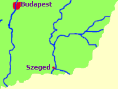
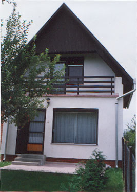

Békésszentandrás an der Körös bzw. Kreisch im südöstlichen
Ungarn ist ein Anglerparadies dort, wo die vereinigten drei
Arme der zu jahreszeitlichen Überschwemmungen neigenden
Körös aus den westlichen Karpaten bereits durch ein
Stauwerk im Thermalkurort
Gyomaendrőd, ca. 30 km östlich von hier gebändigt wird.

Békésszentandrás an der Körös hat
4.000 Einwohner in einer leicht besiedelten landwirtschftlichen
Gegend mit 28 km langem Flusslauf eintlang der Körös. 5 km westlich von
Szarvas gelegen befindet sich in Szarvas das größte Arborethum von
Ungarn mit einem botanisch interessanten Naturschutzgebiet auf
einem 83 Hektar großen Parkgelände. Der
Anglererfolg ist hier garantiert auch bei Pleiten, Pech und Panne
durch die Fischteiche am östlichen Ortsrand.
Der "Kákafoki holtág", ein Altarm (toter Arm) der Körös
ist das beste Anglerparadies weit und breit. Der Kákafoki Altarm
erstreckt sich zwischen den Ortschaften szarvas und
Békésszentandrás. Er entstand
im Jahre 1936 beim Bau des Stauwerkes östlich von hier, ist relativ groß und
interessant für Angler. Karpfen, Hecht, Wels, diverse Weißfische
und Balin kommen hier am häufigsten vor. Zu den Karpfen zählt auch
der Amurkarpfen, der hier in Hülle und Fülle vorkommt. Das folgende Video zeigt den Fang eines
11,15 kg schweren Amurkarpfens, der letztendlich
seine Freiheit zurückerhielt:
Békésszentandrás ist schon lange gut vorbereitet an den
Empfang von Touristen. Unterkünfte von der 4-Sterne-Klasse bis zu
den gut gepflegten Anglerhütten gibt es hier in
ausreichender Zahl.
Etwa 500 Ferienhäuser erwarten die Gäste in
Békésszentandrás in einer
wenig besiedelten Landschaft, darunter viele speziell für Angler
vorbereiteten Anglerhütten, wie das folgende Video zeigt:

Das folgende Video - (leider) auf Ungarisch - ist eine
Demonstration der Umgebung von Békésszentandrás, Szarvas und Kondoros:
Sie wollen endlich einmal
nach Ungarn?
Neben Puszta und
Budapest mit den vielen
Thermalbädern ist der Balaton ein weiterer Anziehungspunkt des
Landes in der
sommerlichen Badesaison.
Nur gerade eine Autobahnstunde entfernt von der
ungarischen Hauptstadt Budapest liegt der Balaton. Aber auch Angler und Segler sind hier bestens bedient
und nicht nur im Sommer. Theiß und Körös sind die fischreichsten Gewässer im
östlichen Ungarn.


 Sie wollen endlich einmal
nach Ungarn?
Sie wollen endlich einmal
nach Ungarn?